Haxhi dhe Rregullat e Tij
Shtyllat e Islamit
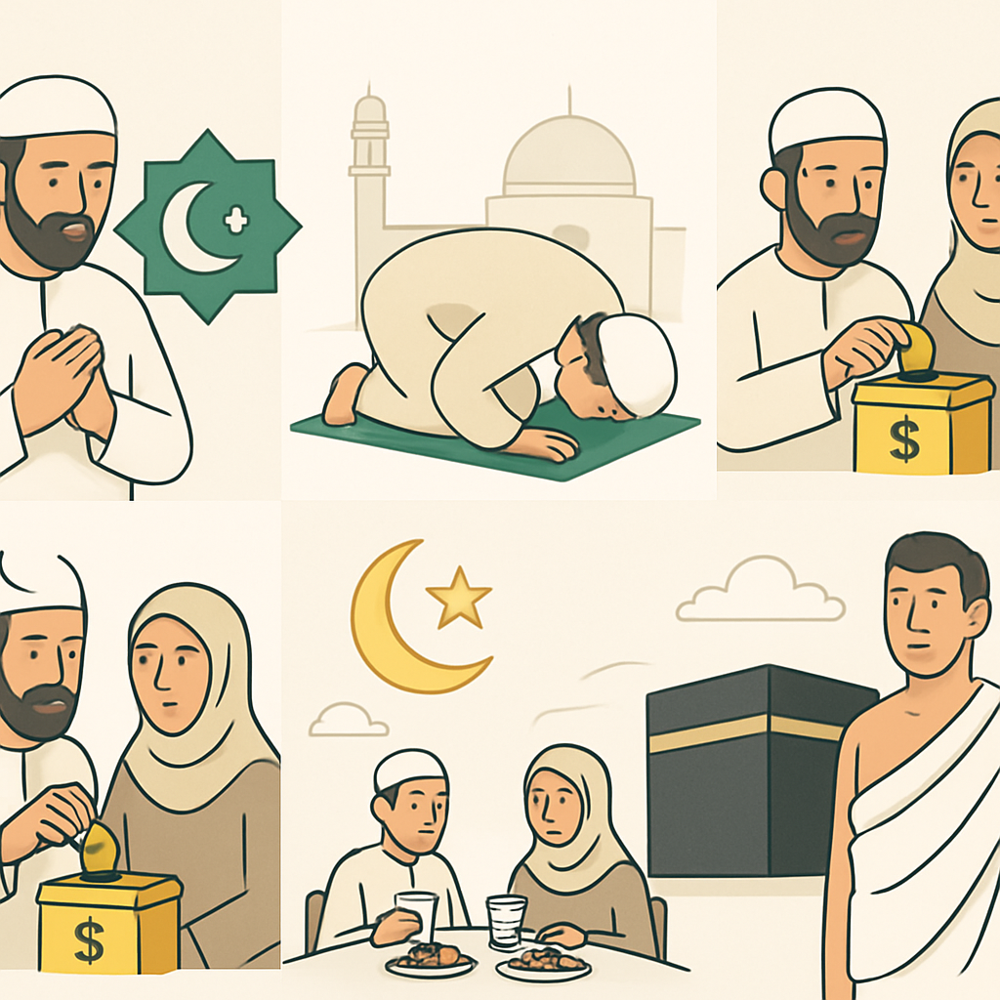
- Dëshmia: Nuk ka zot tjetër përveç Allahut dhe Muhamedi është i Dërguari i Tij
- Falja e namazit
- Dhënia e zekatit
- Agjërimi i Ramazanit
- Haxhi në Qabe (për ata që kanë mundësi)
Kryerja e Umres
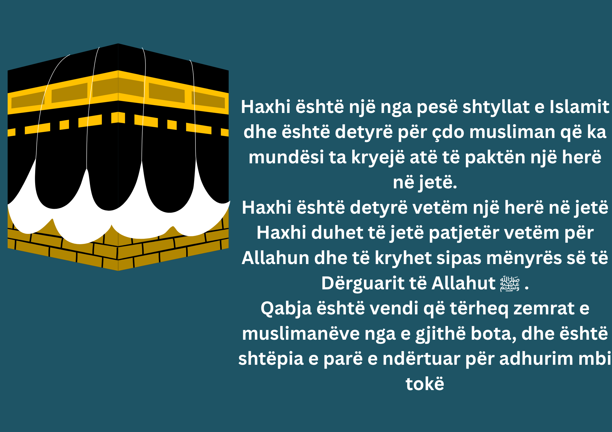
- Veshja e ihramit
- Kryerja e tavafit (7 rrotullime rreth Qabes)
- Ecja mes Safas dhe Mervas (Saji)
- Qethja apo shkurtimi i flokëve
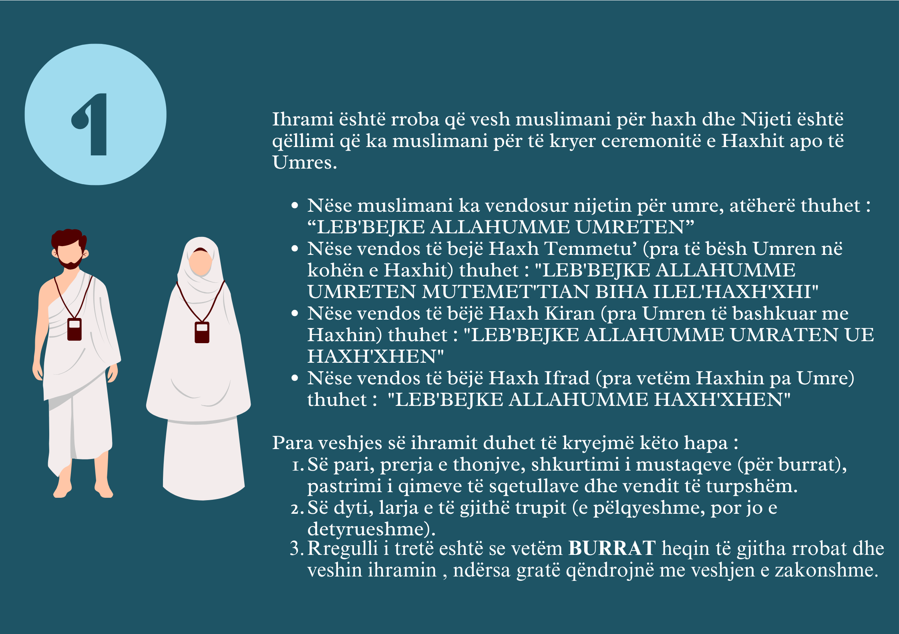
Etapat Kryesore të Haxhit
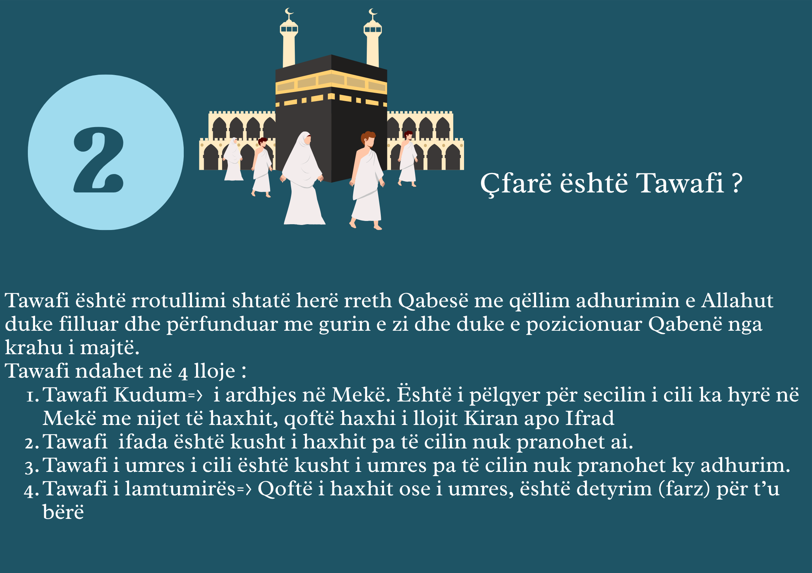
- Veshja e ihramit
- Qëndrimi në Arafat (shtyllë e Haxhit)
- Qëndrimi në Muzdelife dhe mbledhja e guralecëve
- Gjuajtja e guralecëve në Mina
- Therja e kurbanit
- Tavafi i Ifadas dhe Saji për Temet’tua
- Tavafi i Lamtumirës
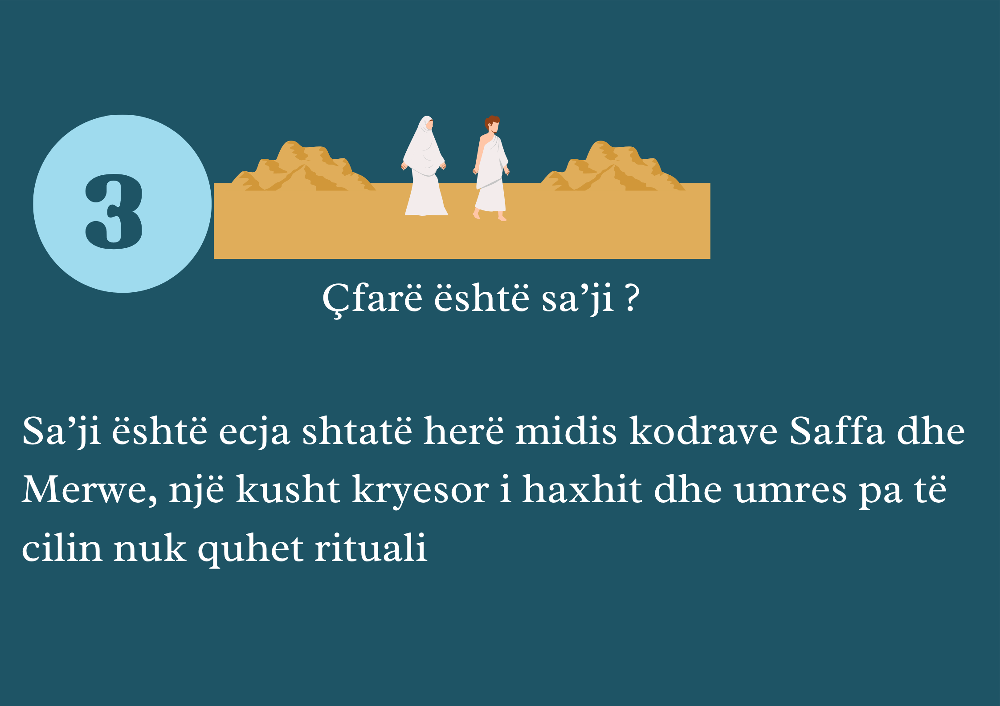
Veshja dhe Ndalesat në Ihram
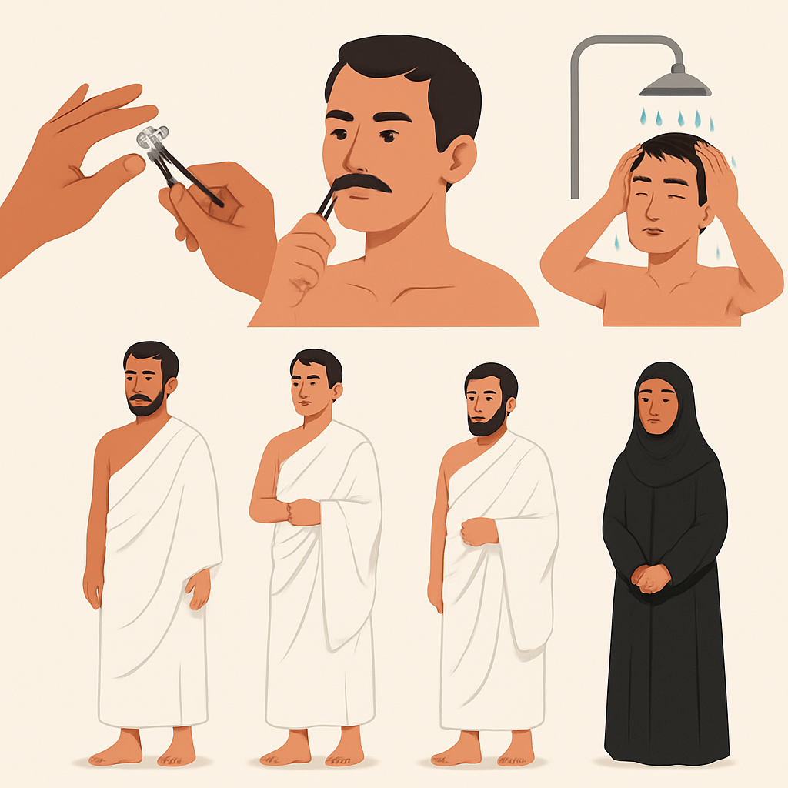
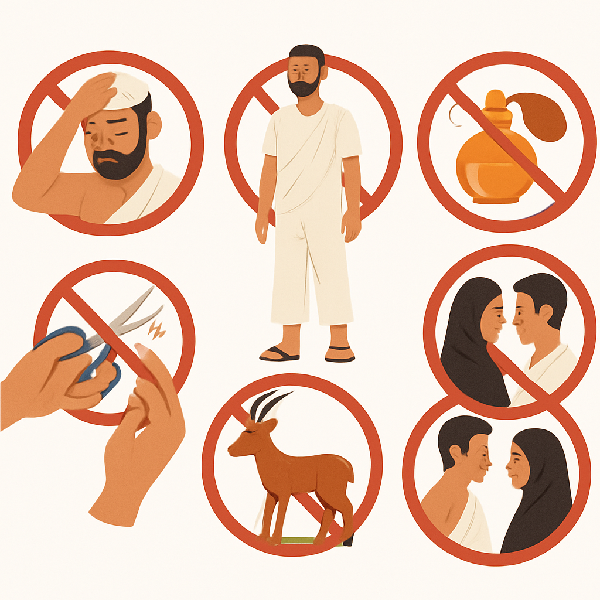
Edukata e Udhëtimit dhe Miqatet
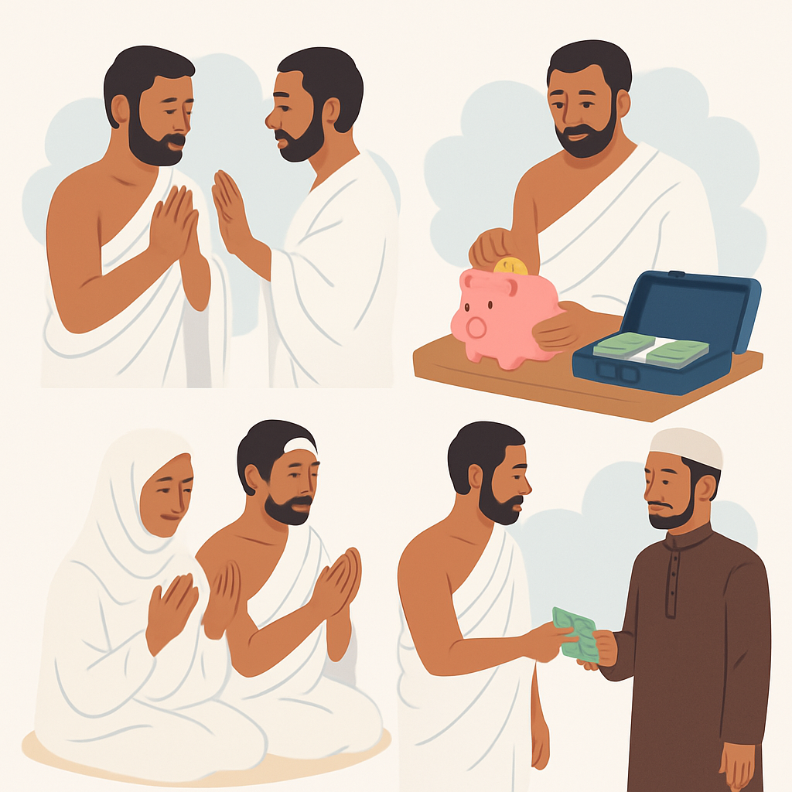
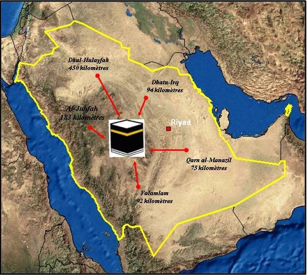
Kushtet dhe Detyrimet e Haxhit
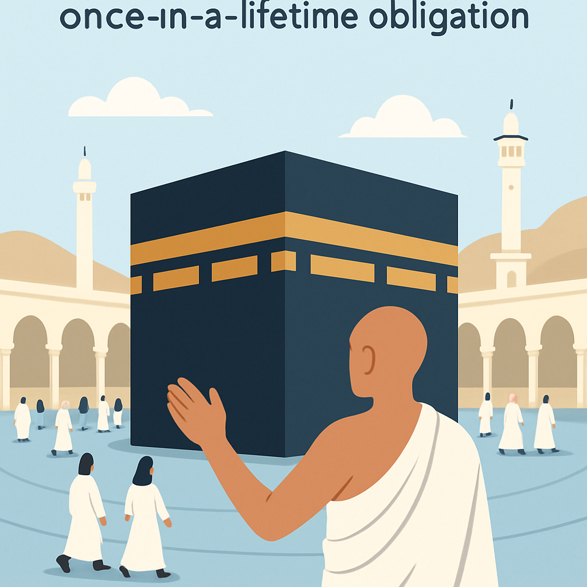
- Qëndrimi në Arafat është shtyllë e Haxhit — pa të, Haxhi është i pavlefshëm.
- Veshja e ihramit në vendcaktim është detyrë e domosdoshme.
- Tavafi i Ifadas, Saj mes Safa-Mervas dhe Tavafi i Lamtumirës janë të domosdoshëm.
- Qëndrimi në Muzdelife dhe Mina për netët e Kurbanit është detyrë.
- Hedhja e guralecëve dhe therja e kurbanit (për Temet’tua dhe Kiran) janë pjesë e rëndësishme.
- Gruaja nuk mund të kryejë Haxhin pa mahram (afërm të ngushtë).
Lutjet dhe Vizitat në Medinë
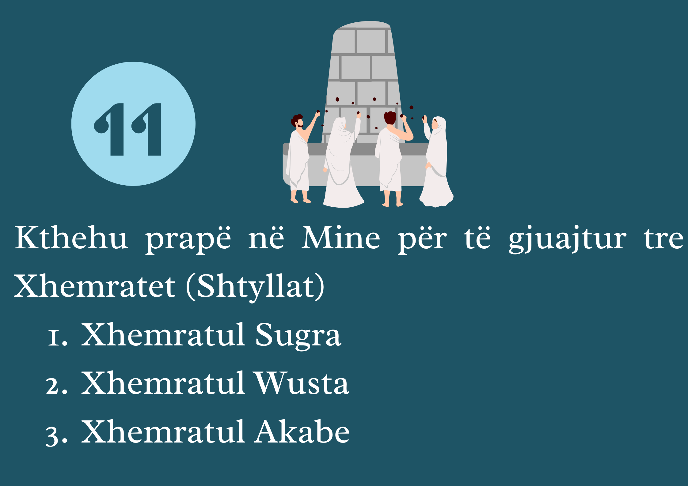
- Lutjet gjatë hyrjes në çdo xhami: "Eudhu billahil adhīm..."
- Vizitoni Xhaminë e Profetit në Medinë dhe falni dy rekate në Raudhah
- Vizitoni varrin e Profetit Muhamed dhe përshëndeteni me selam
- Vizitoni varrezat e Bakias dhe Uhudit
- Pëlqehet vizita në Xhaminë Kuba me nijet për shpërblimin e Umres
Rregulla të Tjera të Haxhit
- Nijeti duhet të jetë i sinqertë vetëm për hir të Allahut
- Paraja për udhëtim duhet të jetë hallall dhe pa borxhe
- Gjatë ihramit ndalohen grindjet, sharjet, dhe çdo veprim mëkatar
- Gruaja me zakone nuk kryen tavaf deri sa të pastrohet
- Lejohet që haxhi të bëhet në emër të dikujt tjetër, nëse e ke kryer më parë vetë